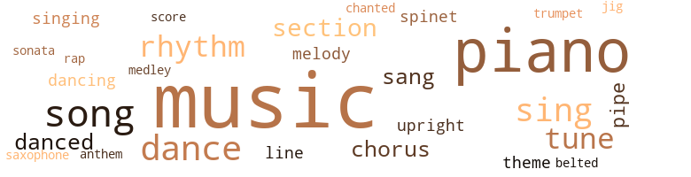
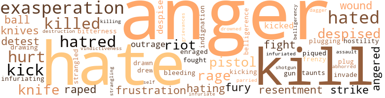
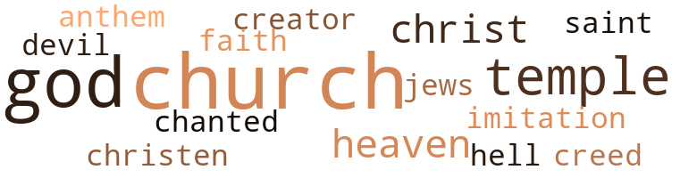

Loving Her, by Shockley, Ann Allen (1987)
207 music-related terms matched in this text.
Most frequent terms in this topic: music (74); piano (43); song (8); sing (8); dance (8)
belt_out.v.01
Definition: sing loudly and forcefully
| word | sentence |
|---|---|
| belted | He dropped several coins into the slot , and Aretha belted out her blues hit , Chain of Fools . |
chorus.n.01
Definition: any utterance produced simultaneously by a group
| word | sentence |
|---|---|
| chorus | It was only when she directed the school chorus for commencement and special occasions that her face bloomed into a softness that was almost beauty . |
| chorus | During the week , she was the student accompanist for the chorus . |
| chorus | Her radio was on and the clear , strident young voices of a high school chorus singing Joy to the World filled the room . |
| chorus | The chorus was jubilantly singing Jingle Bells in high-spirited unison . |
cornet.n.01
Definition: a brass musical instrument with a brilliant tone; has a narrow tube and a flared bell and is played by means of valves
| word | sentence |
|---|---|
| trumpet | The music piped about them was dreamy , and Renay wondered whether it was the food or Jackie Gleason 's dulcet trumpet sounds making them sleepy . |
dance.n.01
Definition: an artistic form of nonverbal communication
| word | sentence |
|---|---|
| dance | Thanks for the dance . " |
| dance | De - nise chimed in , spinning around in a make-believe fantasy dance , skirt whirling above her little brown legs . |
| dances | Afterward , there was a steady succession of dances , movies and beer dates . |
| dance | On the spring night of his fraternity dance , their relationship almost came to an end . |
| dance | At the dance , she saw that he was drinking more than usual , sneaking out to the cars and bushes where bottles and paper cups were hidden . |
| dances | He held her closer than usual during the slow dances . |
| dance | The dance over , they walked slowly from the gym down the path hidden by an embroidery of trees . |
dance.v.02
Definition: move in a pattern; usually to musical accompaniment; do or perform a dance
| word | sentence |
|---|---|
| dancing | " He 's got the sweetest little behind - " Terry crossed the room to Renay ; she had apparently made the peace , because Benjie was dancing now with Phil . |
dance.v.03
Definition: skip, leap, or move up and down or sideways
| word | sentence |
|---|---|
| dance | He 's a reporter for the paper I work for and ca n't sing a note , play a tune , or dance a jig . " |
| danced | " You 've never danced with me . |
| dance | " May I dance with your friend ? " he asked , mouth twisted sardonically as he glanced briefly at Renay . |
| danced | He danced in the white man 's superior way with black women , believing he was doing her a great favor or honor . |
| danced | " First time I 've ever danced with a colored girl . |
| dancing | Renay could see Terry was n't dancing now with the woman . |
| dance | Can I dance with your girl here ? " |
| danced | The woman whose husband had danced with her sidled up to her . |
hymn.n.01
Definition: a song of praise (to God or to a saint or to a nation)
| word | sentence |
|---|---|
| anthem | " It used to be called the national anthem of the gay life . |
jig.n.01
Definition: music in three-four time for dancing a jig
| word | sentence |
|---|---|
| jig | He 's a reporter for the paper I work for and ca n't sing a note , play a tune , or dance a jig . " |
medley.n.01
Definition: a musical composition consisting of a series of songs or other musical pieces from various sources
| word | sentence |
|---|---|
| medley | Renay drifted into a medley of Duke Ellington tunes , and Lorraine crossed the room to stand beside the piano , humming off-key along with Solitude . |
music.n.01
Definition: an artistic form of auditory communication incorporating instrumental or vocal tones in a structured and continuous manner
| word | sentence |
|---|---|
| music | Like there are things an artist says with his brush and you with your music . |
| music | I 'm lost without my music . |
| music | To let Denise know she was contributing to their keep , and to preserve her independence , but above all , to keep alive and active that integral part of her - her music . |
| music | This kind of music made the background comfortable to them . |
| music | She knew what the words were before they entered her ears : Damn luggers ought not to be allowed in places like this - the same people who had applauded her music had now forgotten . |
| music | " No , I 'm not doing any kind of work for her , " Renay replied curtly , wishing the woman would leave so she could get back to her music . |
| music | She pretended to concen - trate on the music , thinking that if she appeared occupied , the woman 's questions might cease . |
| music | Then the unison of love : the rhythm like a slow mounting blues that grew and grew into a crescendo that left her weak , but still strong enough to make the music and the feeling better . |
| music | The indefinable pain lifted her to the point where her arms and legs clasped the back that was making the music heighten until the blues ended in a cry of ecstasy - the pain so sweet and yet so sharp that it hurt before subsiding in a low tremor . |
| music | She found herself humming along with the soft music siphoned in from nowhere . |
| music | With Jerome Lee - to the soul music , chitterlings , pig 's feet , rotgut whiskey , pot smoking and writhing black men dry-screwing to a scratchy , never-ending Ray Charles . |
| music | The guests were drinking , milling around , talking and laugh - ing while background music rose above them , sounds which could barely be heard over the caterwaul of voices . |
| music | The tempo of the music had relaxed , and two women began dancing . |
| music | She closed her eyes , deadening the thoughts , concentrating on the music , savoring the moment . |
| music | The music was low and sweet . |
| music | When the music stopped , the man approached them , the woman following . |
| music | Then she saw Terry 's arms go around the woman to guide her to the music . |
| music | Miss Sims taught music at the high school where her father was princi - pal . |
| music | Stony 's hand snaked down her spine to rest on her buttocks , rotating them in a slow circling movement in time with the music . |
| music | All students had to go around to the side entrance to the little music room . |
| music | None of the students had ever seen beyond the rose-colored cubicle that housed the well-kept Steinway with its bench top that lifted to expose Miss Sims 's stacks of sheet music . |
| music | The sounds of music and the tumult of voices followed them in descending spirals down the steps and into the early morning street . |
| music | Terry knew that music was an intrinsic part of her , the side of her nature that needed expressing and nurturing , and for that need Terry had given her a piano . |
| music | Jerome Lee had never attempted to understand her or what her music meant to her . |
| music | The music he liked was loud , blaring rock , or rhythm and blues - music which best served his background for drinking and man-lies and woman-tales . |
| music | The music he liked was loud , blaring rock , or rhythm and blues - music which best served his background for drinking and man-lies and woman-tales . |
| music | Let me hear some funky music ! " |
| music | One time , to prove her varied talent , she played his kind of music to show that she could . |
| music | Sometimes they went to sleep by music . |
| music | Renay reached across Terry to dial an FM station that played soft music all night . |
| music | She stayed very still , listening to the music : Now I know-w-w What kisses can mean For those before Were ne-ver ne-ver like these The closeness of Terry and the music spread a warm current through her body . |
| music | She stayed very still , listening to the music : Now I know-w-w What kisses can mean For those before Were ne-ver ne-ver like these The closeness of Terry and the music spread a warm current through her body . |
| music | The two most important things she learned from Miss Sims were a dedication to and a love for music . |
| music | The music enveloped the room in muted gossamer tones , quieting them for a long , thought - ful moment . |
| music | Is n't Terry lucky to have someone around who can play music ? " |
| music | I love music . |
| music | She knew that she was slightly high , feeling relaxed and ethereal to the point where nothing mattered except the drink and Renay 's music . |
| music | She had enough knowledge of music to sense the girl 's natural talent and sensitivity to music . |
| music | She had enough knowledge of music to sense the girl 's natural talent and sensitivity to music . |
| music | It came as a small shock to her when one night she realized that she was coming here for more than music . |
| music | " You used to enjoy Renay 's music so much . " |
| music | The music was nostalgic and melancholy , yet with an intensity that touched the beauty and terror of fear . |
| music | Besides , her training had been in music . |
| music | I know a music publisher who might be interested . " |
| music | The church people thought she had promise , and this was their way of showing appreciation for all the Sunday mornings and Sunday evenings when they had raised their voices and tapped their feet to her music . |
| music | She called Renay a stick-in-the-mud because she spent all her time in the music de - partment or studying . |
| music | Mrs. Stilling relaxed in her cherry rocker , head back , eyes closed , enjoying the music filling the room . |
| music | Walden was stretched out on the floor by the piano , the music lulling him into a half-sleep . |
| music | The dinner was good , and Byron Ford ate heartily , carrying on desultory gossip about people Terry knew , and asking questions of Renay about her music and studies . |
| music | The first few days she was busier than usual , staying in town late to study in the college library or to use the music practice rooms . |
| music | After her hastily eaten meals , she often returned to the music library to study for her theory exam , frequently finding herself the only student in the library . |
| music | Lorraine said quietly , listening to the music . |
| music | Then , taking a deep breath , she climbed the concrete steps to the rectangular stone music building . |
| music | Miss Sims launched a series of excited questions about Renay 's music , her studies and what she had been doing . |
| music | " Let 's all go into the music room and listen to Renay play , " Miss Sims suggested , leading the way . |
| music | It was the same little room with the Steinway and its bench of sheet music . |
| music | " What kind of music do you want to hear ? " |
| music | The music rocked the room , bouncing off the walls and tables like huge hard marbles . |
| music | The music was asphalt to Renay 's trained ears , but the onlook - ers were apparently enjoying it , for they ad-libbed to the words , shouted " Yeah-h-h , work , work , work ! " and gyrated as best they could on the small floor and at the tables . |
| music | The evening seemed too long for her , enmeshed in frivolous talk , bad music , too many drinks and not enough substance . |
| music | Pillows of all descriptions were scattered carelessly about the living room and soft music stemmed from somewhere in the wall . |
| music | A stillness enveloped the room as if all were startled by the music coming from the sad black girl in the bargain basement black dress with dime store accessories - the girl who had previously played only popular tunes or requests drawn from the attics of their memories . |
| music | The music piped about them was dreamy , and Renay wondered whether it was the food or Jackie Gleason 's dulcet trumpet sounds making them sleepy . |
| music | " I love music . |
| music | She was probably amused at her playing De - bussy or even being able to read music . |
| music | There 's a subtlety in his music that demands special sensitivity on the part of the pianist . |
| music | Then she began to talk in the most natural and knowledgeable way about music and musicians she knew , and before Renay realized it , she had joined in . |
| music | How long since she had talked of music with someone ? |
| music | I have a check from the music publishers and some money saved up . |
| music | Hearing the music , she felt lonely and nostalgic as she remembered Christmases of other times and places . |
| music | The jukebox played Christmas music rendered by a guitar-grinding rock group whose only words she could understand were " Santa Claus " and " town . " |
| music | The hard music and twanging voices were loud and bad , but somehow that seemed to help . |
| music | The car radio was saturated with Christmas music . |
| music | The music had a rock beat and shook the walls of the small cluttered kitchen . |
| Music | Music is you ! " |
piano.n.01
Definition: a keyboard instrument that is played by depressing keys that cause hammers to strike tuned strings and produce sounds
| word | sentence |
|---|---|
| piano | Renay sat down at the piano . |
| piano | " Let her play what she wants , " Phil interrupted , settling in a chair near the piano . |
| piano | Then she told Terry about the old piano and the music lessons , and about the church and the college , but little about Jerome Lee . |
| piano | Flushed with champagne , they gathered around the piano to sing fraternity songs whose tunes Renay easily picked up as they hummed them to her - tunes remi - niscent of those on her campus long ago . |
| piano | Terry had left her early to go out on an assignment , and she had been at the piano all morning working on the composition she was trying to finish . |
| piano | Renay went back to the piano , unable to concentrate now because of the vacuum 's hum in Terry 's room . |
| piano | The dust cloth was closer , moving briskly over the glistening piano . |
| piano | " Sure is a pretty piano . |
| piano | Renay had n't struck a note on the piano the entire time she was there . |
| piano | Renay turned around on the piano bench to face her . |
| piano | Just think , you can even play the piano in the woods if you like . |
| piano | The moving van had already brought the piano , stereo , TV sets and other items Terry wanted . |
| piano | There it was : a shiny new baby grand piano in the corner by the fireplace , just as if it belonged there and had in fact been there all the time . |
| piano | The one piano in her Kentucky home had been a second-hand , yellow-keyed , scarred upright . |
| piano | Terry knew that music was an intrinsic part of her , the side of her nature that needed expressing and nurturing , and for that need Terry had given her a piano . |
| piano | Those times when he would come sulkily home to find her at the piano , he would storm angrily : " Will you stop all that goddam banging ! |
| piano | Wish I could play the piano or do something exciting like that . |
| piano | Now , as she reflected on her life with Terry , whose gift of the piano had stirred the well of memories , she wondered about Miss Sims . |
| piano | Renay ran her fingers experimentally up and down the keys of the beautiful new piano , forming arpeggios , chords and brief frag - ments of songs . |
| piano | Renay drifted into a medley of Duke Ellington tunes , and Lorraine crossed the room to stand beside the piano , humming off-key along with Solitude . |
| piano | " Wish I could play the piano like that . |
| piano | Renay swung around on the piano bench to face her . |
| piano | Strong ! " she commented , placing the glass on the table beside the piano . |
| piano | She had wondered why the girl did n't smile more , look at the audience , or hold her head up from the protective fence of the piano keys . |
| piano | " I have n't felt so happy since the first time I walked in and saw you at the piano . |
| piano | Walden was stretched out on the floor by the piano , the music lulling him into a half-sleep . |
| piano | Lorraine mixed a second drink and went over to sit in the chair beside the piano . |
| piano | To be close to Renay , Lorraine chose a small table near the piano . |
| piano | A television set with a sailboat nightlamp on top occupied the corner where her piano had once been . |
| piano | " Wish I had a piano so you could play something pretty for me . " |
| piano | " We 'll find a piano before I leave . " |
| piano | But the most important thing on her agenda was to find a piano - her mother came first . |
| piano | For herself , the piano was the only thing that make her life less lonely in the small , dingy four-room apartment . |
| piano | She had sent the piano on an empty truck a friend of hers was driving there to pick up a load of furniture . |
| piano | Louise , remember my telling you about Renay - my most promising piano student ? " |
| piano | Requests were stacked high on the silver tray atop the piano , and the tips were growing heavier as the customers ate and drank more . |
| piano | " I 'm going to buy a piano , chicken , " Vance said to Renay . |
| piano | It 's a relief to come here and just hear a piano instead of those awfully jarring combos with their far-out sounds . |
| piano | Again she felt anger at this white woman languidly smoking and being patronizing because she could play a piano . |
| piano | A week later she came home to the bleak apartment to find the old piano gone , a vacant corner where it had once been . |
| piano | Not the piano - Oh , Christ ! " |
| piano | Does she play the piano too ? " |
| piano | " The piano 's gone . |
pipe.n.04
Definition: a tubular wind instrument
| word | sentence |
|---|---|
| pipes | An apartment less dismal , with more windows to let in the daylight , one without the peeling paint , rattling pipes and the splintered floors Denise had played on . |
| pipe | He shrugged , taking a pipe from his coat pocket and carefully filling it with Tilltown Tobacco . |
| pipe | Bob 's teeth clamped down hard on the pipe stem . |
rap.n.05
Definition: genre of African-American music of the 1980s and 1990s in which rhyming lyrics are chanted to a musical accompaniment; several forms of rap have emerged
| word | sentence |
|---|---|
| rap | " But , hon - ey , let me tell you , when it gets too goddam unbearable - " his tone half rose as his eyes flashed with mirth , " - Clarence Wigginstone III - that 's me - sneaks across town to the Black Bottom Cafe to eat soul food , hear Aretha and listen to that good black ai n't - nothing-like-it rhythmic rap ! " |
rhythm.n.04
Definition: the arrangement of spoken words alternating stressed and unstressed elements
| word | sentence |
|---|---|
| rhythm | Then the unison of love : the rhythm like a slow mounting blues that grew and grew into a crescendo that left her weak , but still strong enough to make the music and the feeling better . |
| rhythm | The music he liked was loud , blaring rock , or rhythm and blues - music which best served his background for drinking and man-lies and woman-tales . |
| rhythm | At those moments , only the monotonous rhythm of the bedsprings penetrated her thoughts . |
| rhythm | When Terry rose above her , her body movements began to gyrate in tune with the rhythm of the bow as she cried out to the maker of the song : " Terry - now ! " |
| rhythm | His rage spilled over into obscenity , the words coming out in staccato rhythm with the blows : " Motherfucker - bitch - queer ! " |
| rhythm | The car 's radio blared with an all-night rhythm and blues station featuring a jive-talking disk jockey constantly limelighting himself as Daddy Soul Motion . |
| Rhythms | Rhythms of love , giving , sharing , mixed with the rising volcanic heat of desire as her body answered , called and held . |
sax.n.02
Definition: a single-reed woodwind with a conical bore
| word | sentence |
|---|---|
| saxophone | Without further ado , the drummer , guitarist , saxophone player and bassist struck one crushing dissonant sound and broke into their first ear-splitting number , the guitarist leading the herd . |
score.n.02
Definition: a written form of a musical composition; parts for different instruments appear on separate staves on large pages
| word | sentence |
|---|---|
| score | Renay leaned over her score , pencil in hand , trying to ignore the noise that was scattering her thoughts like broken crystals . |
section.n.01
Definition: a self-contained part of a larger composition (written or musical)
| word | sentence |
|---|---|
| section | Then , with forced winded constraint , " To be perfectly frank , if you 've noticed , there are no Negroes living in this particular section of the city . |
| section | Thank you for letting me know what a nice lily-white section of town this is and about the wonderful pure white people who inhabit it . |
| section | Moving on to the bakery section , she selected , for Denise , dainty pink and white frosted cupcakes sprinkled with nuts . |
| section | From sixth grade through high school , she had taken one lesson a week , walking three long blocks through the so-called uppity black residential section , to Miss Pearl Sims 's place . |
| section | He swerved into a dimly lighted street in a deteriorating resi - dential section and parked in front of a storefront restaurant hemmed by a crumbling brick apartment building and a garbage - strewn vacant lot . |
sing.v.02
Definition: produce tones with the voice
| word | sentence |
|---|---|
| sing | He 's a reporter for the paper I work for and ca n't sing a note , play a tune , or dance a jig . " |
| sing | Flushed with champagne , they gathered around the piano to sing fraternity songs whose tunes Renay easily picked up as they hummed them to her - tunes remi - niscent of those on her campus long ago . |
| sing | " I 'll make it very good for you - " The robin looked in again to sing his chirping song of happiness - the only sound in a morning still very young . |
| sing | Was n't it Popeye who used to sing , " I am what I am and that 's all that I am " This was the part Terry had discovered . |
| sings | " How stupid of me - assuming that she sings . " |
| sing | " We do n't all sing , " Renay said edgily . |
| sing | " Your father sure could sing . |
| sing | Albert could sing worlds ' round some of these white folks they got croakin ' on television now . |
| sang | The sparrow flew to the top of the highest branch where he sang and sang to the morning sky . |
| sang | The sparrow flew to the top of the highest branch where he sang and sang to the morning sky . |
| sang | " Jerome Lee - Jerome Lee - bitter fruit upon my tree - " she sang and laughed . |
| sing | " Vance said that you sing . " |
| sang | It 's so good - " The cries were there as a curtain of blackness struck and she sang out in pleasure . |
singing.n.01
Definition: the act of singing vocal music
| word | sentence |
|---|---|
| singing | Her radio was on and the clear , strident young voices of a high school chorus singing Joy to the World filled the room . |
| singing | The chorus was jubilantly singing Jingle Bells in high-spirited unison . |
sonata.n.01
Definition: a musical composition of 3 or 4 movements of contrasting forms
| word | sentence |
|---|---|
| sonata | She sat down at the old spinet and played Mrs. Stilling 's favorite Schubert , the allegro movement of the post - humous A major piano sonata . |
song.n.01
Definition: a short musical composition with words
| word | sentence |
|---|---|
| songs | Flushed with champagne , they gathered around the piano to sing fraternity songs whose tunes Renay easily picked up as they hummed them to her - tunes remi - niscent of those on her campus long ago . |
| song | A robin chirped a lone morning song outside the window as it cocked its head to look in at them . |
| song | " I 'll make it very good for you - " The robin looked in again to sing his chirping song of happiness - the only sound in a morning still very young . |
| song | When she got it , she heard a female singer 's clear , bell-like voice singing : After years of lone - li - ness There is love There is our-r-r love " That song - " Terry murmured sleepily , arms tightening around Renay . |
| songs | Renay ran her fingers experimentally up and down the keys of the beautiful new piano , forming arpeggios , chords and brief frag - ments of songs . |
| song | Outside , the inquisitive birds chirped their treble song at the window . |
| song | When Terry rose above her , her body movements began to gyrate in tune with the rhythm of the bow as she cried out to the maker of the song : " Terry - now ! " |
| Song | " In that case , let 's call it " Song for Souls . " |
| song | " Terry , you sent my song to them . |
| Song | They want to publish Song for Souls ! " |
| song | " New song - like it ? " |
| song | Renay had been interviewed by a smoothly groomed male emcee about her recently published song . |
spinet.n.02
Definition: early model harpsichord with only one string per note
| word | sentence |
|---|---|
| spinet | " You must come over and play Schubert for me , my dear , on my old spinet . |
| spinet | She sat down at the old spinet and played Mrs. Stilling 's favorite Schubert , the allegro movement of the post - humous A major piano sonata . |
theme.n.03
Definition: (music) melodic subject of a musical composition
| word | sentence |
|---|---|
| theme | Then she began developing a theme she had been composing , a melody that nagged her at times for completion - a seed of creativity trying to be born . |
| theme | Renay was playing again , and Terry heard the familiar theme , recognizing it as the composition she had been working on for a long while . |
tone.v.01
Definition: utter monotonously and repetitively and rhythmically
| word | sentence |
|---|---|
| chanted | Denise chanted re - petitiously , spinning in a pirouette . |
tune.n.01
Definition: a succession of notes forming a distinctive sequence
| word | sentence |
|---|---|
| tune | He 's a reporter for the paper I work for and ca n't sing a note , play a tune , or dance a jig . " |
| tune | " She still likes you , " she said stiffly , thinking of Jean and pecking out a nameless tune with one finger - a bell sound high and shrill as fear . |
| tunes | Flushed with champagne , they gathered around the piano to sing fraternity songs whose tunes Renay easily picked up as they hummed them to her - tunes remi - niscent of those on her campus long ago . |
| tunes | These were the tunes which brightened a memory in their past , or whose melody was familiar . |
| melody | These were the tunes which brightened a memory in their past , or whose melody was familiar . |
| tunes | Renay drifted into a medley of Duke Ellington tunes , and Lorraine crossed the room to stand beside the piano , humming off-key along with Solitude . |
| melody | Then she began developing a theme she had been composing , a melody that nagged her at times for completion - a seed of creativity trying to be born . |
| tune | When Terry rose above her , her body movements began to gyrate in tune with the rhythm of the bow as she cried out to the maker of the song : " Terry - now ! " |
| line | Her fingers traced a thin line down Terry 's back - a line she had traced many times before but that always seemed an exciting new path . |
| line | Fran said , jockeying for a position in line . |
| tunes | A stillness enveloped the room as if all were startled by the music coming from the sad black girl in the bargain basement black dress with dime store accessories - the girl who had previously played only popular tunes or requests drawn from the attics of their memories . |
upright.n.02
Definition: a piano with a vertical sounding board
| word | sentence |
|---|---|
| upright | " Yes - " She reached to set the cup upright in the saucer . |
| upright | The one piano in her Kentucky home had been a second-hand , yellow-keyed , scarred upright . |
146 violence-related terms matched in this text.
Most frequent terms in this topic: anger (18); hate (13); kill (9); exasperation (5); hated (5)
abhor.v.01
Definition: find repugnant
| word | sentence |
|---|---|
| abhorred | But most black women feared and abhorred Lesbians more than rape - perhaps because of the fear bred from their deep in - ward potentiality for Lesbianism . |
aggravation.n.01
Definition: an exasperated feeling of annoyance
| word | sentence |
|---|---|
| exasperation | Terry 's voice rose in exasperation as she threw her long legs off the side of the bed . |
| exasperation | She emitted a deep sigh of exasperation as the vacuum 's bee hum began once again , receding now into the dining room . |
| exasperation | Terry cried out in exasperation . |
| exasperation | Vance tried to smile , spreading her large hands in exasperation . |
| exasperation | Terry said in exasperation , recalling the half-nude spreads in magazines boosting the actress 's first movie role . |
anger.n.01
Definition: a strong emotion; a feeling that is oriented toward some real or supposed grievance
| word | sentence |
|---|---|
| anger | To take their anger at themselves and the world about them , hold their sperm , spew out their babies ? |
| anger | When she stood up to leave him , he rose from the table and in his anger knocked against the table and turned over his cup . |
| anger | Holding in her anger , she looked over the mountain peak of the hat to the foyer wall behind Miss Wilby , then back directly into the eyes . " |
| anger | She fought the bitter tide of anger , forcing her rage down before turning to face the challenging storm of Miss Wilby . |
| anger | For the first time , Terry realized that Jean , in her anger , was being completely honest with her . |
| anger | Terry 's eyes stung wetly as hot anger welled deep within her . |
| anger | " But when Negroes move in , there follows a rash of them , and - " Face livid with anger , she rose , shoving the chair back hard against the wall . |
| Anger | Anger built aggres - sion within her as she thought about Renay and herself . |
| anger | " I 'll tell the NAACP how liberal you are ! " she retorted , eyes blazing with anger . |
| anger | A smile pocketed the corners of her mouth as she thought about last night and Terry 's jealous anger . |
| anger | Renay sipped her coffee , looking quietly at Terry , the long length of her face , the gray eyes that lightened with mirth and deepened with anger or thought . |
| anger | The anger and the outrage of the past brought tears to her eyes . |
| anger | His anger , his belligerency and his hatred of her were more apparent than ever . |
| anger | Pains of anger and resentment stabbed her . |
| anger | Again she felt anger at this white woman languidly smoking and being patronizing because she could play a piano . |
| anger | The anger spilled over . |
| anger | Something in the woman 's voice was quieting Renay 's anger . |
| anger | Despite the pragmatic thinking which cooled her at a moment that should have invited recriminations , anger , even tears , she felt an emptiness within as sadness made a tiny sepulcher in her stomach to catch the unshed tears . |
| anger | Terry 's head jerked up , a sudden cloud of anger and displeas - ure darkening her face . |
anger.v.02
Definition: become angry
| word | sentence |
|---|---|
| Angered | Angered by his words , Renay tried to push him away , but his arms were hard about her . |
| angered | Then , angered by Renay 's silence , she sneered half-seriously , half-mockingly : " You do like men , do n't you ? " |
belligerence.n.01
Definition: hostile or warlike attitude or nature
| word | sentence |
|---|---|
| belligerence | The old belligerence and self-deprecation swelled the words . |
| belligerency | His anger , his belligerency and his hatred of her were more apparent than ever . |
bleeding.n.01
Definition: the flow of blood from a ruptured blood vessel
| word | sentence |
|---|---|
| bleeding | " Thanks to people who 've shared some of the bleeding with me . " |
choking.n.02
Definition: the act of suffocating (someone) by constricting the windpipe
| word | sentence |
|---|---|
| strangling | Suddenly with a strangling , retching sound , she raised her body . |
contemn.v.01
Definition: look down on with disdain
| word | sentence |
|---|---|
| despised | " What does a bulldike know about love ? " she scoffed , triumphantly watching Terry recoil at the word she knew she despised . |
| despise | " Yes , " she said , turning to face him , " you want to beat me , to trample on me , see me grovel because you despise what you ca n't change . |
| despised | Finally she knew that she had to tell him whom she had shunned and despised and ignored . |
| despised | God , she despised him . |
| despise | " I despise him ! " |
craze.n.02
Definition: state of violent mental agitation
| word | sentence |
|---|---|
| frenzy | " Oh-o-o - " she groaned as the sky 's pit fell in and stars burst about her in a maddening frenzy . |
dagger.n.01
Definition: a short knife with a pointed blade used for piercing or stabbing
| word | sentence |
|---|---|
| dagger | Impatiently , savagely , he pinned her shoul - ders down with his weight , trying to shove his male dagger into the secret abyss of her being . |
draw.v.23
Definition: pull (a person) apart with four horses tied to his extremities, so as to execute him
| word | sentence |
|---|---|
| drew | The orange Volkswagen drew up noisily behind them , horn beeping merrily . |
| drawing | She moaned , drawing up her knees . |
| drawn | Watching her half-leaning on the hassock with one slim leg drawn up in an arch , she noticed Lorraine 's suntan , a deep bronze except for the pale white ring around her wrist , exposed by a forgotten watch . |
drown.v.04
Definition: kill by submerging in water
| word | sentence |
|---|---|
| drowned | The realization drowned out the rain and caused new life to flow within her . |
enrage.v.01
Definition: put into a rage; make violently angry
| word | sentence |
|---|---|
| enraged | Jean 's outburst had enraged her , and had brought out personal feelings that she had tried to ignore . |
fight.n.05
Definition: a boxing or wrestling match
| word | sentence |
|---|---|
| fight | He could put up a messy fight , and perhaps even get Denise . " |
fight.v.02
Definition: fight against or resist strongly
| word | sentence |
|---|---|
| fought | She fought the bitter tide of anger , forcing her rage down before turning to face the challenging storm of Miss Wilby . |
| fight | That black man who can only fight his personal battles and frustrations with black women . |
frustration.n.03
Definition: a feeling of annoyance at being hindered or criticized
| word | sentence |
|---|---|
| frustration | The image of him made her tremble and want to strike back in frustration . |
| frustrations | That black man who can only fight his personal battles and frustrations with black women . |
fury.n.01
Definition: a feeling of intense anger
| word | sentence |
|---|---|
| fury | Realizing she meant it and knowing he could not change her mind , he spat out in roaring fury . |
| rage | She fought the bitter tide of anger , forcing her rage down before turning to face the challenging storm of Miss Wilby . |
| rage | Terry muttered , teeth clenched in rage . |
| Fury | Fury boiled inside her . |
| rage | His rage spilled over into obscenity , the words coming out in staccato rhythm with the blows : " Motherfucker - bitch - queer ! " |
grudge.n.01
Definition: a resentment strong enough to justify retaliation
| word | sentence |
|---|---|
| grievances | I take care of the black workers ' grievances , complaints and whatever . " |
gun.n.01
Definition: a weapon that discharges a missile at high velocity (especially from a metal tube or barrel)
| word | sentence |
|---|---|
| gun | Anyway , just in case , keep the gun in the bedroom . |
hate.n.01
Definition: the emotion of intense dislike; a feeling of dislike so strong that it demands action
| word | sentence |
|---|---|
| hatred | Then he saw the hatred and contempt on her face . |
| hate | The hate spilling out in spiteful memories , the garbage accusations . |
| hate | There are those of us who do n't participate in marches or go to jail for the cause and bear intolerable hate . |
| hate | Renay had told her bits and pieces about him - his selfishness , the nagging demeaning of her , the drink-sickness - enough to make her hate this nonentity who had given Renay what she could not give - a name and a child . |
| hatred | His anger , his belligerency and his hatred of her were more apparent than ever . |
| hatred | I do n't want my hatred for him to become a part of her too . |
| hatred | She 's a child - she 'll know enough of hatred when she grows up . |
hate.v.01
Definition: dislike intensely; feel antipathy or aversion towards
| word | sentence |
|---|---|
| hate | Love had taught her not to hate . |
| hated | Most men hated and feared Lesbians . |
| hate | " You do n't know how it is to hate a man - " She closed her eyes , trying to relax in the silence that followed . |
| hate | " I know what it is to be objectionable to people who surmise what I am and hate me for it . |
| detest | Anyway , I detest eating in confusion , " Phil said , shuddering . |
| hate | I 'm beginning to simply hate people . |
| hate | " I hate to think of all this work . |
| hated | She hated the nights when he came to bed in his T-shirt and shorts , the appendage she thought grotesque either hanging out flabbily or making a tent in his underwear . |
| hating | " I get so depressed from reading the daily papers with all the horrible news and people hating one another . |
| hated | Someone , somewhere in the past , must have done and thought and felt like this with another-or hated in a different and helpless way . |
| hate | They hate to lose things acquired by choice . |
| hate | " I simply hate you with love . " |
| hating | I guess we caught it both ways : the males hating Lesbians because of the affront to their male egos , and the women feeling shaken by our independence from males and perhaps mostly because of their own fears of what might exist within themselves . |
| hated | On the way to her room , she thought : I 've been kissed by a man and I hated it . |
| hate | But do you really want to know why you hate me ? |
| hate | God , I hate him , " Terry said fiercely . |
| detest | " I detest him for everything he 's done to you , for every damn miserable moment he 's given you . " |
| hate | It 's only wrong to hate , not wrong to love . " |
| hated | It did n't seem right , so I got a cab with a surly driver who hated bringing me all the way out here . |
hostility.n.01
Definition: a hostile (very unfriendly) disposition
| word | sentence |
|---|---|
| hostility | Renay could feel the white hostility issuing forth like desert heat . |
indignation.n.01
Definition: a feeling of righteous anger
| word | sentence |
|---|---|
| indignation | Terry bounced back with feigned indignation . |
| outrage | But strangely , they still love their men , work for them , pity them , bear the seed of their spawn , and take the outrage of those who ca n't be black warriors . |
| outrage | The anger and the outrage of the past brought tears to her eyes . |
infuriate.v.01
Definition: make furious
| word | sentence |
|---|---|
| infuriating | It had made her mother madder than hell , and now it was infuriating her . |
| infuriate | Her pretense at calmness seemed to infuriate him more . |
| infuriated | She had carried this all through her life with him and this infuriated him to the point of despair . |
injury.n.01
Definition: any physical damage to the body caused by violence or accident or fracture etc.
| word | sentence |
|---|---|
| hurt | It was over , and all she knew was the hurt and the stickiness on her legs . |
| hurt | But , Christ , she did n't want Terry hurt . " |
invade.v.01
Definition: march aggressively into another's territory by military force for the purposes of conquest and occupation
| word | sentence |
|---|---|
| invade | A hard tightening began to invade her senses , a warning sign that the drink was acting too fast . |
kick_back.v.02
Definition: spring back, as from a forceful thrust
| word | sentence |
|---|---|
| kicks | There had been Jean and others like Jean , along with those who had done it for kicks , for curiosity - and some to allay boredom with sex itself . |
| kick | She slammed the door , pausing outside it for a moment to suppress the urge to turn and kick it . |
| kicks | Freaks who live only for kicks ? |
| kicking | " Renay was going to play something for us , " Lorraine said , kicking off her sandals and curling her legs under her on the couch . |
| kicked | Renay tiredly kicked off her shoes and moved to switch on more light . |
| kicked | His foot kicked her side and pain streaked white slivers of heat throughout her body . |
| kick | You ought to kick up your heels some . |
kill.v.10
Definition: cause the death of, without intention
| word | sentence |
|---|---|
| killed | " My father was killed in a freak tractor accident while working on a farm when I was a little girl . " |
| kill | " I 'll kill the son of a bitch if I catch him ! " |
| killed | I could have killed him ! " |
| killed | She could have killed him - with the lone coffee cup . |
| killed | Terry did not cry aloud , but made a strange gurgling sound , convulsing like one killed while surprised . |
| kill | " Phil would kill me ! " |
| kill | " If you even look at a man , I 'll kill you . " |
| killing | He was capable of killing her and feeling totally justified . |
| kill | I ought to stay right here and wait for her and then kill you both ! " |
| kill | He 's going to kill me , she thought , and in between the hell of the pain and agony and fear , the telephone rang , a nebulous jangling on the wall . |
| kill | She wanted to cry and vomit and kill him . |
| kill | He was going to scare him , threaten him with the book - assault and battery , intent to kill , housebreaking , every damn thing he could . |
| kill | We got to kill this bottle ! " |
| kill | ' I 'm going to kill you , Denise , to get back at your damn bitch of a mother . ' |
knife.n.02
Definition: a weapon with a handle and blade with a sharp point
| word | sentence |
|---|---|
| knife | You feel it twisting around inside like a serpentine knife , hurting and sometimes healing . |
| knives | " She usually leaves it in an envelope right in the top drawer of the cabinet where the knives and forks are . |
| knife | She needed something to protect herself - a knife . |
| knives | The knives were in the cabinet drawer behind him . |
| knife | Teeth clamped to stifle the cries that escaped when passion heated and blackness descended , shot through with flashes of red and gold lights - heaven and hell too , when the piercing ache swept through the groin like a knife . |
musket_ball.n.01
Definition: a solid projectile that is shot by a musket
| word | sentence |
|---|---|
| ball | " The belle of the ball , " Terry bowed mockingly . |
| balls | Paying homage to the season , she had dutifully placed a small artificial silver tree on the table near the fireplace , garnishing it with red balls and a star . |
pain.v.02
Definition: cause emotional anguish or make miserable
| word | sentence |
|---|---|
| hurt | Jean 's pride was hurt ; she had to be defensive . |
| hurt | Only I think he must have thought he 'd hurt you worse than he had , or gotten scared as hell . |
parry.v.01
Definition: impede the movement of (an opponent or a ball)
| word | sentence |
|---|---|
| parried | Lazarius parried in feigned indig - nation . |
pique.v.01
Definition: cause to feel resentment or indignation
| word | sentence |
|---|---|
| piqued | Apparently not piqued by Renay 's reticence , Miss Wilby dragged on tena - ciously . |
pistol.n.01
Definition: a firearm that is held and fired with one hand
| word | sentence |
|---|---|
| pistol | The hard cold metal brushed Renay 's skin as Terry put the pistol back . |
| pistol | She had n't known that Terry had a pistol . |
| pistol | She thought quickly of the pistol Terry had left with her , but it was upstairs in the bedroom . |
punch.v.01
Definition: deliver a quick blow to
| word | sentence |
|---|---|
| plug | He was on edge until he could get out of her sight and stop the hands so flagrantly indepen - dent of him - until he could plug up the nausea inside and put life into the ashes to remake a false bright flame which lifted him again into a nubilated world , created by and for him alone . |
| plugging | I 'll pick up Denise after school , " Terry said quietly , plugging in the coffee pot . |
rape.n.03
Definition: the crime of forcing a woman to submit to sexual intercourse against her will
| word | sentence |
|---|---|
| assault | He was going to scare him , threaten him with the book - assault and battery , intent to kill , housebreaking , every damn thing he could . |
rape.v.01
Definition: force (someone) to have sex against their will
| word | sentence |
|---|---|
| raped | She probably was hoping to be raped , Terry thought wryly . |
| raped | " It 's about as bad as being raped . " |
resentment.n.01
Definition: a feeling of deep and bitter anger and ill-will
| word | sentence |
|---|---|
| resentment | Renay felt hot resentment rise within her at the incriminating question . |
| bitterness | We 'll have to use the past not as a measuring stick for bitterness , but to illuminate the present . " |
| resentment | Pains of anger and resentment stabbed her . |
riot.n.01
Definition: a public act of violence by an unruly mob
| word | sentence |
|---|---|
| riots | God only knows what this world 's comin ' to - wars and riots and killin 's . |
| riot | " It was a near riot . |
| riot | The walls were a riot of colors - rainbows of blue , gold , purple and pink . |
shotgun.n.01
Definition: firearm that is a double-barreled smoothbore shoulder weapon for firing shot at short ranges
| word | sentence |
|---|---|
| shotgun | On the way , they passed hollow-eyed men and women sitting on sunken porches in shaky wooden chairs , trying to absorb the listless August air pep - pered with tobacco smells from the factory before going back into the humid dark shotgun shacks to bed . |
strangle.v.01
Definition: kill by squeezing the throat of so as to cut off the air
| word | sentence |
|---|---|
| strangled | A catch in her throat partially strangled the word . |
strike.v.04
Definition: make a strategic, offensive, assault against an enemy, opponent, or a target
| word | sentence |
|---|---|
| strike | The image of him made her tremble and want to strike back in frustration . |
| strike | You too could become angry and , as the angry do , want to strike back . |
suicide.n.01
Definition: the act of killing yourself
| word | sentence |
|---|---|
| self-destruction | Those bawdy phantoms who drank with him and had sex with him and who , too , were shadows of him , mirroring his audacity and self-destruction . |
twit.n.02
Definition: aggravation by deriding or mocking or criticizing
| word | sentence |
|---|---|
| taunts | She decided not to answer him , to ignore his taunts and gibes , thinking that perhaps he would leave . |
vindictiveness.n.01
Definition: a malevolent desire for revenge
| word | sentence |
|---|---|
| vindictiveness | And because making her suffer was his prime concern , he did it ruthlessly , disregarding others who might fall in the wake of his vindictiveness . |
wound.n.01
Definition: an injury to living tissue (especially an injury involving a cut or break in the skin)
| word | sentence |
|---|---|
| wound | Just as quickly , her tongue sought to kiss and heal the wound . |
| wound | Her thoughts lingered on Renay - fragile musings that skirted lightly so as not to probe too deeply and open the wound . |
37 religion-related terms matched in this text.
Most frequent terms in this topic: church (9); God (8); temples (3); heaven (2); Christ (2)
baptize.v.01
Definition: administer baptism to
| word | sentence |
|---|---|
| christen | " Thought we ought to christen the house ! " she announced happily to Renay , who was in the kitchen cooking dinner . |
church.n.02
Definition: a place for public (especially Christian) worship
| word | sentence |
|---|---|
| church | Then she told Terry about the old piano and the music lessons , and about the church and the college , but little about Jerome Lee . |
| church | Inevitably there would be someone to drop in after church to eat . |
| church | And back there was the church with its sisters and brothers whose Sunday collections of pennies and dimes had been invested in faith and gratitude for making them happy . |
| church | Could hear him above all the church choir on Sundays . |
| church | Right nice lady - comes to church ' casionally with her sometimes . |
| church | Outside the far-off church bells tolled their clear resonant sounds , proclaiming the midnight Christmas service . |
church.n.04
Definition: the body of people who attend or belong to a particular local church
| word | sentence |
|---|---|
| Church | On Sundays , in the Asbury Baptist Church , she put Miss Sims 's teachings to work by playing to give pleasure to others while they praised God and dreamed Sunday dreams of a better world . |
| church | The church scholarship committee , along with Miss Sims 's strong recommendation to the college , had helped her mother send her to the state college in Frankfort . |
| church | The church people thought she had promise , and this was their way of showing appreciation for all the Sunday mornings and Sunday evenings when they had raised their voices and tapped their feet to her music . |
| church | " And you know her mother - " " Yes - we 've spoken at church . |
creed.n.01
Definition: any system of principles or beliefs
| word | sentence |
|---|---|
| creed | Harold Arnold Walter 's creed . " |
eden.n.01
Definition: any place of complete bliss and delight and peace
| word | sentence |
|---|---|
| heaven | " What do you know about me before - " " For heaven 's sake , " Phil said laughingly , returning with Ben - jie and a handful of napkins . |
| heaven | Teeth clamped to stifle the cries that escaped when passion heated and blackness descended , shot through with flashes of red and gold lights - heaven and hell too , when the piercing ache swept through the groin like a knife . |
god.n.03
Definition: a man of such superior qualities that he seems like a deity to other people
| word | sentence |
|---|---|
| God | One thing about us black folks , she thought , we got a sense of humor , and thank God , for that 's what has kept us sane all through the centuries . |
| God | It was about how God made the earth . |
| God | On Sundays , in the Asbury Baptist Church , she put Miss Sims 's teachings to work by playing to give pleasure to others while they praised God and dreamed Sunday dreams of a better world . |
| God | And God , when she does and gets more than two drinks under her belt , she has a terrible temper . " |
| God | Thank God for Sunday . |
| God | God 's Trombones by James Weldon Johnson . |
| God | God only knows what this world 's comin ' to - wars and riots and killin 's . |
| God | " Do you think God 's punishing us for this ? |
godhead.n.01
Definition: terms referring to the Judeo-Christian God
| word | sentence |
|---|---|
| creator | " The creator is not always the best judge . |
hell.n.01
Definition: any place of pain and turmoil
| word | sentence |
|---|---|
| hell | " I hope to hell it fits . " |
hymn.n.01
Definition: a song of praise (to God or to a saint or to a nation)
| word | sentence |
|---|---|
| anthem | " It used to be called the national anthem of the gay life . |
imitation.n.01
Definition: the doctrine that representations of nature or human behavior should be accurate imitations
| word | sentence |
|---|---|
| imitation | The imitation kerosene lamp licked forked shadows over the print . |
jew.n.01
Definition: a person belonging to the worldwide group claiming descent from Jacob (or converted to it) and connected by cultural or religious ties
| word | sentence |
|---|---|
| Jews | I do n't suppose you rent to Jews either , do you ? " |
messiah.n.01
Definition: any expected deliverer
| word | sentence |
|---|---|
| Christ | It 's called Winnie-the-Pooh and it 's all about a boy named Christ - opher Robin who named his bear Winnie-the-Pooh , " Terry said , taking Denise by the hand . |
| Christ | I liked her , but Christ , do n't bury yourself because it went sour . |
religion.n.01
Definition: a strong belief in a supernatural power or powers that control human destiny
| word | sentence |
|---|---|
| faith | And back there was the church with its sisters and brothers whose Sunday collections of pennies and dimes had been invested in faith and gratitude for making them happy . |
saint.n.02
Definition: person of exceptional holiness
| word | sentence |
|---|---|
| Saint | His hands always shook like that - trembling in a sort of Saint Vitus 's Dance . |
satan.n.01
Definition: (Judeo-Christian and Islamic religions) chief spirit of evil and adversary of God; tempter of mankind; master of Hell
| word | sentence |
|---|---|
| devil | After a long while and more drinks , every sinew of her body seemed needled by devil 's claws warming her body with false solace . |
temple.n.03
Definition: an edifice devoted to special or exalted purposes
| word | sentence |
|---|---|
| temple | Wine at the temple of Sappho . |
| temples | The tinge of gray at the temples seemed more pronounced now . |
| temples | Heavy veins stood out at his temples , straining as if ready to burst . |
| temples | Her hands crept to her forehead , pressing the temples , ac - knowledging the winglike gray skirting each side . |
tone.v.01
Definition: utter monotonously and repetitively and rhythmically
| word | sentence |
|---|---|
| chanted | Denise chanted re - petitiously , spinning in a pirouette . |